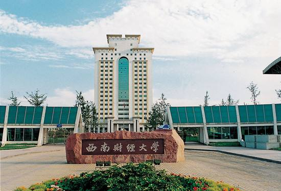

大学精神
形象标识
优良传统
光华路名
光华铁树
校训：严谨勤俭求实开拓
创办时间 |
1925年6月3日 |
主管部门 |
中人民共和国教育部 |
所属地区 |
中国-四川-成都 |
类别 |
公立大学 |
学校类型 |
财经类大学 |
知名校友 |
刘家义，尚福林，蒋超良…… |
属性 |
211工程/985工程优势学科创新平台 |
学校官网 |
http://www.swufe.edu.cn |

西南财经大学（Southwestern University of Finance and Economics），位于天府之国——成都市，直属于中华人民共和国教育部，是国家首批“双一流”世界一流学科建设高校，国家教育体制改革试点高校，位列“211工程”，入选“2011计划”、“985工程优势学科创新平台”，是以经济学管理学为主体、金融学为重点的全国重点大学，被誉为“中国金融人才库”。
西南财经大学始于1925年在上海创建的光华大学。1925年6月3日，在“五卅”反帝爱国怒潮中，圣约翰大学的爱国师生脱离该校，拥戴张寿镛先生创办光华大学。校名取自“日月光华，旦复旦兮”（《卿云歌》），象征着复兴中华、反抗帝国主义割宰和奴役的革命精神。1938年，光华大学在抗战烽火中由上海内迁成都，成立光华大学成都分部。1946年更名为私立成华大学。1952年私立成华大学改为公立，汇聚西南地区17所院校的财经系科组建四川财经学院。1960年分设四川财经学院和四川科学技术学院，1961年合并更名为成都大学。1978年恢复为四川财经学院。1979年由四川省划归中国人民银行主管。1985年更名为西南财经大学。
在学校办学历程中，胡适、周有光、钱钟书、徐志摩、叶圣陶、谢霖、陈豹隐等大师曾于此著述立言；彭迪先、李孝同、梅远谋、刘洪康、杨佑之、汤象龙、王叔云、刘诗白、曾康霖等经济学家于此传道授业。
截至2017年6月，学校携光华、柳林两校区，总占地2300余亩；有专任教师1380余人，全日制在校生22600余人；下设27个学院（中心、部）。